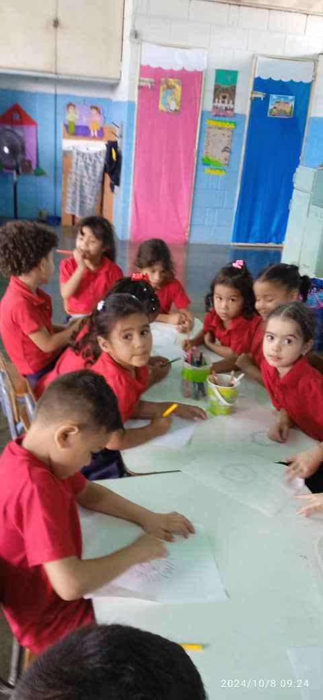

C.E.I Mi Papagayo Volador

La visión del C.E.I Mi Papagayo Volador es ser una institución
educativa de excelencia que impacte positivamente en la vida de nuestros estudiantes y de la
comunidad. Aspiramos a formar ciudadanos íntegros, creativos y críticos, capaces de construir
un futuro mejor. Para lograrlo, nos comprometemos a ofrecer una educación integral que combine
lo académico con lo social y lo emocional, fomentando el desarrollo de habilidades como la comunicación,
el trabajo en equipo y la resolución de problemas. Asimismo, buscamos establecer una estrecha colaboración
con las familias y la comunidad, creando un ambiente educativo
enriquecedor y solidario.